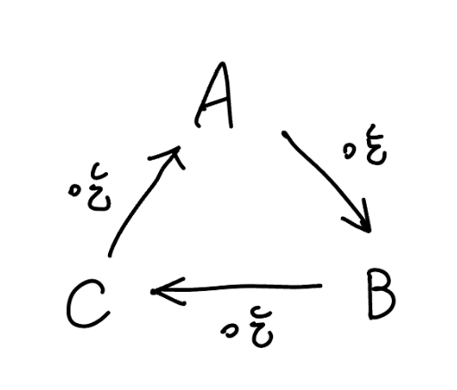

並查集
一般的並查集
模板 CF EDU A. Disjoint Sets Union
維護一個 DSU，支持：
\(\text{union}(u,v):\) 合併 \(u\) 和 \(v\) 所在的集合
\(\text{get}(u,v):\) 查詢 \(u\) 和 \(v\) 是否在同一個集合
\(n,m\le 10^5\)
模板
只做啟發式合併
struct DSU {
vector < int > par , sz ;
DSU ( int n = 0 ) : par ( n ), sz ( n , 1 ) {
for ( int i = 0 ; i < n ; i ++ ) {
par [ i ] = i ;
}
}
int find ( int x ) {
if ( par [ x ] == x ) return x ;
return find ( par [ x ]);
}
bool merge ( int u , int v ) {
u = find ( u ), v = find ( v );
if ( u == v ) return false ;
if ( sz [ u ] < sz [ v ]) swap ( u , v );
par [ v ] = u ;
sz [ u ] += sz [ v ];
return true ;
}
};
路徑壓縮 + 啟發式合併
struct DSU {
vector < int > par , sz ;
DSU ( int n = 0 ) : par ( n ), sz ( n , 1 ) {
for ( int i = 0 ; i < n ; i ++ ) {
par [ i ] = i ;
}
}
int find ( int x ) {
if ( par [ x ] == x ) return x ;
return par [ x ] = find ( par [ x ]);
}
bool merge ( int u , int v ) {
u = find ( u ), v = find ( v );
if ( u == v ) return false ;
if ( sz [ u ] < sz [ v ]) swap ( u , v );
par [ v ] = u ;
sz [ u ] += sz [ v ];
return true ;
}
};
複雜度
啟發式合併
並查集中節點數為 \(n\) 的樹，高度至多為 \(\lfloor \log n \rfloor\)
說明
因為合併的時候是啟發式合併，子樹大小比較小的放在比較大的下面。這樣合併出來的樹，每次往上走一層，子樹大小都會變至少兩倍，所以高度最多 \(O(\log n)\)
如果上面看不懂的話，假設目前的子樹的根為 \(u\) ，要合併進來的子樹的根為 \(v\) 。我們分兩種 case 討論。假設 \(u,v\) 的子樹都符合 「高度至多為 \(\log n\) 」這個條件
\(size_u\ge size_v\)
\(size_u< size_v\)
對於第一種 case，因為 \(size_u\ge size_v\) ，所以 \(v\) 會接在 \(u\) 上。顯然 \(v\) 的高度一定 \(\le u\) 的高度，所以 \(v\) 接在 \(u\) 上並不會增加 \(u\) 的子樹的高度
對於第二種 case，因為 \(size_u< size_v\) ，所以 \(u\) 會接在 \(v\) 上。顯然 \(v\) 的高度一定 \(\ge u\) 的高度，所以 \(u\) 接在 \(v\) 上對於原本 \(u\) 的子樹來說 \(size\) 變成了兩倍之多，而 \(u\) 上面多了一層
所以每次往上走一層，\(size\) 都至少變兩倍，因為點數只有 \(n\) 個，所以最多只會有 \(\log n\) 層，也就是高度至多為 \(\log n\)
嚴謹一點的證明
【引理】：在並查集中高度為 \(k\) 的樹，節點數至少為 \(2^k\) 。
使用歸納法證明這個引理
basecase : \(k = 0\) 時，成立
假設 \(k \le L - 1\) 時成立。當 \(k = L\) 時，存在一次使得樹從高度 \(L - 1\) 變成高度 \(L\) 的操作。在這次操作前，兩棵樹的高度必然為 \(L - 1\) ，因此它們的節點數總數至少為 \(2\times 2^{L-1}=2^L\) 。
設一個並查集內的樹的節點有 \(n\) 個，高度是 \(h\) 。根據引理，\(n \ge 2^h\) ，則 \(\log n \ge h\) 。故並查集中節點數為 \(n\) 的樹，高度至多為 \(\lfloor \log n \rfloor\)
依照上面的性質，find(x) 的複雜度是 \(O(\log n)\) 。merge(u, v) 的複雜度是兩個 find 也是 \(O(\log n)\) ，所以整體的複雜度是 \(O(\log n)\)
路徑壓縮
若將「路徑壓縮」和「啟發式合併」都用上的話複雜度是 \(\Theta(\alpha (n))\)
若不使用「啟發式合併」，平均複雜度是 \(O(\log^* n)\)
移動
zerojudge f292. 11987 - Almost Union-Find 有個 \(n\) 物品，每個物品一開始都是自己一組
有 \(q\) 次操作，每次會是其中一種
\(\text{Merge}(x,y):\) 將 \(x,y\) 所在的兩個群體合併為同一個
\(\text{MoveGroup}(x,y):\) 將 \(x\) 從他所在的群體當中移除並且加入 \(y\) 所在的群體
\(\text{Sum}(x):\) 印出 \(x\) 所在的群體包含的成員個數和成員編號總合
思路
我們先來思考「將 \(x\) 從他所在的群體當中移除」
我們直接將 \(x\) 的貢獻給扣掉，也不必真正在 DSU 裡將其刪除
接下來思考 「並且加入 \(y\) 所在的群體」
我們可以對於 \(i=1\sim n\) 維護 \(t_i\) 代表目前 \(i\) 真正的編號
加入新的 group 的時候只需將 \(t_i\) 變成當前沒用過的編號即可，並且可以當成是一個新的點，去執行 merge
詳見代碼
code
void init () {
for ( int i = 1 ; i <= n ; i ++ ) {
f [ i ] = i ;
t [ i ] = i ;
sum [ i ] = i ;
num [ i ] = 1 ;
}
cnt = n ;
}
void delete ( int x ) {
sum [ find ( t [ x ])] -= x ;
num [ find ( t [ x ])] -= 1 ;
t [ x ] = ++ cnt ;
sum [ t [ x ]] = x ;
num [ t [ x ]] = 1 ;
f [ t [ x ]] = t [ x ];
}
void merge ( int x , int y ) {
int tx = find ( t [ x ]);
int ty = find ( t [ y ]);
if ( tx != ty ) f [ ty ] = tx ;
num [ tx ] += num [ ty ];
sum [ tx ] += sum [ ty ];
}
void solve ( int x , int y ) {
delete ( x );
merge ( x , y );
}
參考自 : CSDN
例題
有個 \(n\) 物品編號依序是 \(1,2,3,...,n\) ，每個物品一開始都是自己一組
有 \(q\) 次操作，每次會是其中一種
\(\text{Merge}(x,y):\) 將 \(x,y\) 所在的兩個群體合併為同一個
\(\text{MoveGroup}(x,y):\) 把包含物品 \(x\) 與物品 \(y\) 的兩個組別合併成一個
\(\text{GroupMax}(x):\) 求跟物品 \(x\) 同一組的物品中，編號最大的物品編號
\(n,q\le 2\times 10^5\)
思路
維護很多個 priority_queue
每個 pq 裡面存很多 \(\texttt{pair}(x, t)\) ，\(x\) 就是有的元素，\(t\) 是時間戳記
每次 Move 不要真的把東西搬到別的 Group, 而是直接新增一個時間戳記比較大的 \((x, t')\)
找最大值的時候，一直看這個 pq 的 \(\max\)
如果時間戳記已經過期了就丟掉元素，一直到找到一個不是過期的元素
rollback DSU
模板
模板 CF EDU DSU A. DSU with rollback
有 \(n\) 個點與 \(m\) 個以下操作 :
\(\text{union}(u,v):\) 將 \(u,v\) 所在的連通塊合併成同一個連通塊
\(\text{persist}:\) 新增一個 checkpoint
\(\text{rollback:}\) 回到上一個還沒被 rollback 的 checkpoint
\(n,m\le 2\times 10^5\)
模板
struct Graph {
Graph ( int n ) : n ( n ) {
sz = vector < int > ( n , 1 );
par = vector < int > ( n );
cnt = n ;
for ( int i = 0 ; i < n ; i ++ ) {
par [ i ] = i ;
}
}
void add_edge ( int u , int v ) {
int x = find ( u ), y = find ( v );
if ( x == y ) {
stk . push ({ x , x });
return ;
}
if ( sz [ x ] < sz [ y ]) swap ( x , y );
sz [ x ] += sz [ y ]; par [ y ] = x ;
cnt -- ;
stk . push ({ x , y });
}
void undo () {
auto [ x , y ] = stk . top ();
stk . pop ();
if ( x == y ) return ;
sz [ x ] -= sz [ y ]; par [ y ] = y ;
cnt ++ ;
}
int size () {
return cnt ;
}
private :
int n , cnt ;
vector < int > sz ;
vector < int > par ;
stack < pii > stk ;
int find ( int x ) {
if ( par [ x ] == x ) return x ;
else return find ( par [ x ]);
}
};
rollback dsu 支援判二分圖
struct Graph {
Graph ( int n ) : n ( n ) {
sz = vector < int > ( n , 1 );
par = vector < int > ( n );
dis = vector < int > ( n );
cnt = 0 ;
for ( int i = 0 ; i < n ; i ++ ) {
par [ i ] = i ;
}
}
void add_edge ( const Edge & e ) {
auto [ x , disx ] = find ( e . u );
auto [ y , disy ] = find ( e . v );
if ( x == y ) {
// if (disx == disy) => odd cycle
cnt += ( disx == disy );
stk . push ({ -1 , ( disx == disy )});
return ;
}
if ( sz [ x ] < sz [ y ]) swap ( x , y );
sz [ x ] += sz [ y ]; par [ y ] = x ; dis [ y ] = disx ^ disy ^ 1 ;
stk . push ({ x , y });
}
void undo () {
auto [ x , y ] = stk . top ();
stk . pop ();
if ( x == -1 ) {
cnt -= y ;
return ;
}
sz [ x ] -= sz [ y ]; par [ y ] = y ; dis [ y ] = 0 ;
}
bool check () {
// return : 有沒有 odd cycle
return ( cnt > 0 );
}
private :
int n , cnt ;
vector < int > sz ;
vector < int > par ;
vector < int > dis ;
stack < pii > stk ;
pii find ( int x ) {
if ( par [ x ] == x ) return { x , 0 };
else {
auto [ fa , d ] = find ( par [ x ]);
return { fa , d ^ dis [ x ]};
}
}
};
複雜度
不能使用路徑壓縮（但還是可以啟發式合併），故複雜度 \(O(\log n)\)
帶權並查集
CF 1594 D. The Number of Imposters 給定 \(n\) 個點，每個點有一個未知的 \(w_i\in \{0,1\}\) ，再給 \(m\) 個關係
\((x,y,0):\) \(w_x = w_y\) \((x,y,1):\) \(w_x \neq w_y\)
判斷最多有多少個點的 \(w_i=1\)
思路 1
考慮二分圖染色法判斷，兩個點之間有邊代表兩點的顏色不同
\((x,y,0):\) 在 \(x,y\) 之間建一條邊\((x,y,1):\) 建立一個 \(z\) 點分別連接 \(x,y\)
這樣下去跑二分圖染色法即可，每個連通塊答案取兩種顏色的 \(\max\) ，再加起來
注意在跑二分圖染色法時不能將多餘的 \(z\) 點算進去
code(from acwing )
#include <bits/stdc++.h>
using namespace std ;
typedef long long ll ;
typedef pair < ll , ll > pii ;
const int N = 7e5 + 10 ;
const int M = 2e6 + 8e5 + 10 ;
int c [ 2 ];
int n , z ;
int e [ M ], ne [ M ], h [ N ], idx ;
int st [ N ];
void add ( int a , int b ) {
e [ idx ] = b , ne [ idx ] = h [ a ], h [ a ] = idx ++ ;
}
void init () {
idx = 0 ;
for ( int i = 1 ; i <= z ; i ++ )
{
h [ i ] = -1 ;
st [ i ] = 0 ;
}
}
bool dfs ( int u , int color ) {
st [ u ] = color ;
if ( u <= n ) // 不算入 z 點
c [ 2 - color ] ++ ;
for ( int i = h [ u ]; i != -1 ; i = ne [ i ]) {
int j = e [ i ];
if ( ! st [ j ]) {
if ( ! dfs ( j , 3 - color ))
return false ;
}
else if ( st [ j ] == color )
return false ;
}
return true ;
}
void slove () {
int m ;
cin >> n >> m ;
z = n + 1 ;
for ( int i = 1 ; i <= m ; i ++ ) {
int a , b ;
char c [ 10 ];
scanf ( "%d %d %s" , & a , & b , c );
if ( c [ 0 ] == 'c' ) {
add ( a , z );
add ( z , a );
add ( b , z );
add ( z , b );
z ++ ;
}
else {
add ( a , b );
add ( b , a );
}
}
int ans = 0 ;
int ok = true ;
for ( int i = 1 ; i <= n ; i ++ ) {
if ( ! st [ i ]) {
c [ 0 ] = 0 ;
c [ 1 ] = 0 ;
bool flag = dfs ( i , 1 );
if ( ! flag ) {
ok = false ;
break ;
}
ans += max ( c [ 0 ], c [ 1 ]);
}
}
if ( ! ok )
ans = -1 ;
cout << ans << endl ;
init ();
}
int main () {
int Q ;
cin >> Q ;
memset ( h , -1 , sizeof h );
while ( Q -- ) {
slove ();
}
return 0 ;
}
思路 2
考慮帶權並查集
對於每個並查集維護並查集內每個點與 root 的距離是 \(0\) 或是 \(1\)
最後每個並查集 \(\max(\) 與 root 的距離是 \(0\) 的數量 \(,\) 與 root 的距離是 \(1\) 的數量\()\)
code
#include <bits/stdc++.h>
#define int long long
#define pb push_back
#define mk make_pair
#define F first
#define S second
#define pii pair<int, int>
using namespace std ;
const int INF = 9e18 ;
const int maxn = 2e5 + 5 ;
int n , m ;
int dis [ maxn ], par [ maxn ], cnt [ maxn ][ 2 ];
int find ( int x ) {
if ( par [ x ] == x ) return x ;
else {
int root = find ( par [ x ]);
dis [ x ] ^= dis [ par [ x ]];
par [ x ] = root ;
return root ;
}
}
void solve () {
cin >> n >> m ;
for ( int i = 1 ; i <= n ; i ++ ) dis [ i ] = 0 , par [ i ] = i , cnt [ i ][ 0 ] = 1 , cnt [ i ][ 1 ] = 0 ;
string s ;
int fg = 0 ;
for ( int i = 1 , u , v ; i <= m ; i ++ ) {
cin >> u >> v >> s ;
int dif ;
if ( s [ 0 ] == 'i' ) dif = 1 ;
else dif = 0 ; // same
int x = find ( u ), y = find ( v );
if ( x == y ) {
if (( dis [ u ] ^ dis [ v ]) != dif ) fg = 1 ;
}
else {
dis [ y ] = dis [ u ] ^ dis [ v ] ^ dif ;
par [ y ] = x ;
cnt [ x ][ 0 ] += cnt [ y ][ dis [ y ]];
cnt [ x ][ 1 ] += cnt [ y ][ dis [ y ] ^ 1 ];
}
}
if ( fg == 1 ) {
cout << -1 << " \n " ;
return ;
}
int res = 0 ;
for ( int i = 1 ; i <= n ; i ++ ) {
if ( find ( i ) == i ) {
res += max ( cnt [ i ][ 0 ], cnt [ i ][ 1 ]);
}
}
cout << res << " \n " ;
}
signed main () {
int t ;
cin >> t ;
while ( t -- ) {
solve ();
}
}
持久化並查集
先備知識 : 持久化資料結構
洛谷 P3402 可持久化并查集 給定 \(n\) 個集合，第 \(i\) 個集合內初始狀態下只有一個數，為 \(i\) 。
有 \(m\) 次操作。操作分為 \(3\) 種：
\(1\space a\space b:\) 合併 \(a,b\) 所在集合
\(2\space k:\) 回到第 \(k\) 次操作之後的狀態
\(3 \space a\space b:\) 詢問 \(a,b\) 是否屬於同一集合
註 : 執行三種操作中的任意一種都記為一次操作
\(n\le 10^5,m\le 2\times 10^5\)
實作細節
size 要維護好，不然可能會吃 TLE（啟發式合併壞掉）
記得每次操作後要記得 clone，不然會吃 RE（戳到 roots[] 陣列外面）
不能在 Node 裡面存 l, r，避免 MLE
code
#include <bits/stdc++.h>
#define pii pair<int, int>
#define pb push_back
#define mk make_pair
#define F first
#define S second
#define ALL(x) x.begin(), x.end()
using namespace std ;
struct Node {
Node * lc = nullptr ;
Node * rc = nullptr ;
int val , sz ;
Node () {}
};
struct DSU {
int n ;
DSU ( int n ) : n ( n ) {
roots [ 0 ] = build ( 0 , n - 1 );
}
int check ( int x , int y ) {
int ver = roots . size () - 1 ;
int Fx = find ( ver , x );
int Fy = find ( ver , y );
roots . pb ( new Node ( * roots [ ver ]));
if ( Fx == Fy ) {
return 1 ;
} else {
return 0 ;
}
}
void merge ( int x , int y ) {
int ver = roots . size () - 1 ;
int Fx = find ( ver , x );
int Fy = find ( ver , y );
int Sx = query_sz ( roots [ ver ], 0 , n - 1 , Fx ), Sy = query_sz ( roots [ ver ], 0 , n - 1 , Fy );
if ( Fx == Fy ) {
roots . pb ( new Node ( * roots [ ver ]));
return ;
}
if ( Sx < Sy ) swap ( x , y ), swap ( Sx , Sy ), swap ( Fx , Fy );
// fx->sz > fy->sz
// sz[Fx] += sz[Fy]
Node * tmp = update_sz ( roots [ ver ], 0 , n - 1 , Fx , Sy );
// par[Fy] = Fx
roots . pb ( update_val ( tmp , 0 , n - 1 , Fy , Fx ));
}
void rollback ( int ver ) {
//assert(ver < roots.size());
roots . pb ( new Node ( * roots [ ver ]));
}
private :
// 單點改值, 單點加值, 單點查詢
vector < Node *> roots = { nullptr };
int find ( int ver , int x ) {
int Fx = query_val ( roots [ ver ], 0 , n - 1 , x );
if ( Fx == x ) return Fx ;
else return find ( ver , Fx );
}
Node * build ( int l , int r ) {
Node * root = new Node ();
if ( l == r ) {
root -> val = l ;
root -> sz = 1 ;
return root ;
}
int mid = ( l + r ) / 2 ;
root -> lc = build ( l , mid );
root -> rc = build ( mid + 1 , r );
return root ;
}
Node * update_val ( const Node * root , int l , int r , int pos , int val ) {
Node * now = new Node ( * root );
if ( l == r ) {
now -> val = val ;
return now ;
}
int mid = ( l + r ) / 2 ;
if ( pos <= mid ) {
now -> lc = update_val ( now -> lc , l , mid , pos , val );
} else {
now -> rc = update_val ( now -> rc , mid + 1 , r , pos , val );
}
return now ;
}
Node * update_sz ( const Node * root , int l , int r , int pos , int val ) {
Node * now = new Node ( * root );
if ( l == r ) {
now -> sz += val ;
return now ;
}
int mid = ( l + r ) / 2 ;
if ( pos <= mid ) {
now -> lc = update_sz ( now -> lc , l , mid , pos , val );
} else {
now -> rc = update_sz ( now -> rc , mid + 1 , r , pos , val );
}
return now ;
}
int query_val ( Node * root , int l , int r , int pos ) {
if ( l == r ) {
return root -> val ;
}
int mid = ( l + r ) / 2 ;
if ( pos <= mid ) {
return query_val ( root -> lc , l , mid , pos );
} else {
return query_val ( root -> rc , mid + 1 , r , pos );
}
}
int query_sz ( Node * root , int l , int r , int pos ) {
if ( l == r ) {
return root -> sz ;
}
int mid = ( l + r ) / 2 ;
if ( pos <= mid ) {
return query_sz ( root -> lc , l , mid , pos );
} else {
return query_sz ( root -> rc , mid + 1 , r , pos );
}
}
};
signed main () {
ios :: sync_with_stdio ( 0 );
cin . tie ( 0 );
int n , q ;
cin >> n >> q ;
DSU dsu ( n );
int op , a , b , k ;
while ( q -- ) {
cin >> op ;
if ( op == 1 ) {
cin >> a >> b ;
a -- , b -- ;
dsu . merge ( a , b );
} else if ( op == 2 ) {
cin >> k ;
dsu . rollback ( k );
} else if ( op == 3 ) {
cin >> a >> b ;
a -- , b -- ;
cout << dsu . check ( a , b ) << '\n' ;
}
}
}
想法上是利用 DSU 的 par, size 其實是陣列，將這兩個陣列都套上持久化線段樹的模板後，即可使用，功能是單點查詢（par, size），單點加值（size），單點改值（par）
模板
struct Node {
Node * lc = nullptr ;
Node * rc = nullptr ;
int val , sz ;
Node () {}
};
struct DSU {
int n ;
DSU ( int n ) : n ( n ) {
roots [ 0 ] = build ( 0 , n - 1 );
}
int check ( int x , int y ) {
int ver = roots . size () - 1 ;
int Fx = find ( ver , x );
int Fy = find ( ver , y );
roots . pb ( new Node ( * roots [ ver ]));
if ( Fx == Fy ) {
return 1 ;
} else {
return 0 ;
}
}
void merge ( int x , int y ) {
int ver = roots . size () - 1 ;
int Fx = find ( ver , x );
int Fy = find ( ver , y );
int Sx = query_sz ( roots [ ver ], 0 , n - 1 , Fx ), Sy = query_sz ( roots [ ver ], 0 , n - 1 , Fy );
if ( Fx == Fy ) {
roots . pb ( new Node ( * roots [ ver ]));
return ;
}
if ( Sx < Sy ) swap ( x , y ), swap ( Sx , Sy ), swap ( Fx , Fy );
// fx->sz > fy->sz
// sz[Fx] += sz[Fy]
Node * tmp = update_sz ( roots [ ver ], 0 , n - 1 , Fx , Sy );
// par[Fy] = Fx
roots . pb ( update_val ( tmp , 0 , n - 1 , Fy , Fx ));
}
void rollback ( int ver ) {
//assert(ver < roots.size());
roots . pb ( new Node ( * roots [ ver ]));
}
private :
// 單點改值, 單點加值, 單點查詢
vector < Node *> roots = { nullptr };
int find ( int ver , int x ) {
int Fx = query_val ( roots [ ver ], 0 , n - 1 , x );
if ( Fx == x ) return Fx ;
else return find ( ver , Fx );
}
Node * build ( int l , int r ) {
Node * root = new Node ();
if ( l == r ) {
root -> val = l ;
root -> sz = 1 ;
return root ;
}
int mid = ( l + r ) / 2 ;
root -> lc = build ( l , mid );
root -> rc = build ( mid + 1 , r );
return root ;
}
Node * update_val ( const Node * root , int l , int r , int pos , int val ) {
Node * now = new Node ( * root );
if ( l == r ) {
now -> val = val ;
return now ;
}
int mid = ( l + r ) / 2 ;
if ( pos <= mid ) {
now -> lc = update_val ( now -> lc , l , mid , pos , val );
} else {
now -> rc = update_val ( now -> rc , mid + 1 , r , pos , val );
}
return now ;
}
Node * update_sz ( const Node * root , int l , int r , int pos , int val ) {
Node * now = new Node ( * root );
if ( l == r ) {
now -> sz += val ;
return now ;
}
int mid = ( l + r ) / 2 ;
if ( pos <= mid ) {
now -> lc = update_sz ( now -> lc , l , mid , pos , val );
} else {
now -> rc = update_sz ( now -> rc , mid + 1 , r , pos , val );
}
return now ;
}
int query_val ( Node * root , int l , int r , int pos ) {
if ( l == r ) {
return root -> val ;
}
int mid = ( l + r ) / 2 ;
if ( pos <= mid ) {
return query_val ( root -> lc , l , mid , pos );
} else {
return query_val ( root -> rc , mid + 1 , r , pos );
}
}
int query_sz ( Node * root , int l , int r , int pos ) {
if ( l == r ) {
return root -> sz ;
}
int mid = ( l + r ) / 2 ;
if ( pos <= mid ) {
return query_sz ( root -> lc , l , mid , pos );
} else {
return query_sz ( root -> rc , mid + 1 , r , pos );
}
}
};
複雜度
跟 rollback DSU 一樣，不做路徑壓縮，做啟發式合併
因為 find(x) 的時候至多需要做 \(\log n\) 次單點查詢，故 find(x) 複雜度 \(O(\log^2 n)\)
種類並查集
種類並查集也叫擴展域並查集。這其實不能算做一種特殊的資料結構，它實際上是使用並查集來解決一類循環依賴的類別判定問題
並查集做二分圖 TIOJ 1209 . 圖論 之 二分圖測試
有 \(n\) 個點，給 \(m\) 個 \((u,v)\) 代表 \(u,v\) 不同組，問有沒有辦法將這些點成兩組
\(n \le 4\times 10^4, m\le 5\times 10^5\)
思路
每個點開兩個點 x, x + n 代表正，反。在同一個集合內代表要圖同一種顏色，遍歷 m 對關係，對每對 (u, v)，若在同一個集合內則表示 (u, v) 的關係與之前的關係有衝突，不能同時解決，直接 break 掉，否則，執行 merge(u, v + n), merge(v, u + n)
code
#include <bits/stdc++.h>
#define int long long
using namespace std ;
const int MAXN = 5e5 + 5 ;
int n , m ;
int par [ MAXN ];
void dsu_init () {
for ( int i = 1 ; i <= 2 * n ; i ++ ) {
par [ i ] = i ;
}
}
int find ( int x ) {
if ( par [ x ] == x ) {
return x ;
} else {
return par [ x ] = find ( par [ x ]);
}
}
void merge ( int a , int b ) {
int x = find ( a );
int y = find ( b );
if ( x == y ) return ;
par [ x ] = y ;
}
signed main () {
ios :: sync_with_stdio ( 0 );
cin . tie ( 0 );
while ( cin >> n >> m ) {
if ( n == 0 && m == 0 ) {
break ;
}
dsu_init ();
vector < pair < int , int >> edges ;
int u , v ;
for ( int i = 0 ; i < m ; i ++ ) {
cin >> u >> v ;
edges . push_back ({ u , v });
}
bool flag = true ;
for ( auto [ u , v ] : edges ) {
if ( find ( u ) == find ( v )) {
cout << "No \n " ;
flag = false ;
break ;
} else {
merge ( u , v + n );
merge ( v , u + n );
}
}
if ( flag ) {
cout << "Yes \n " ;
}
}
}
洛谷 P2024 [NOI2001] 食物链 有三類動物 \(A,B,C\) ，這三類動物的⾷物鏈構成如下：\(A\) 吃 \(B\) ，
\(B\) 吃 \(C\) ，\(C\) 吃 \(A\) 。
現有 \(N\) 個動物，編號 \(1,2,...,N\) 。每個動物都是 \(A,B,C\) 中的⼀種，但並不知道是哪⼀種。依序給 \(K\) 條屬
於以下兩種的敘述：
然⽽，並不是每條描述都是正確的，有些是真話，有些是假話。
如果當前的話與前⾯的某些真話衝突，就是假話請判斷哪些話是真話，哪些話是假話。
\(N\le 5\times 10^4, K\le 10^5\)
思路
我們可以⽤並查集維護資訊間的因果關係
⼀個集合裡⾯的資訊代表「這些資訊必須同時發⽣」
⽐如說，假設 \((x,y)\) 符合第⼀種資訊
那就代表：如果 \(x\) 是 \(A\) 類，那 \(y\) 必須是 \(A\) 類，反之亦然
（\(B,C\) 類同樣可以套⽤）
翻譯⼀下：如果 \(x_A\) 發⽣的話，那 \(y_A\) 也⼀定要發⽣（\(B,C\)
類同樣可以套⽤）
\(\text{merge}(x_A, y_A),\text{merge}(x_B, y_B), \text{merge}(x_C,y_C)\)
⽐如說，假設 \((x, y)\) 符合第⼆種資訊
那就代表：
如果 \(x\) 是 \(A\) 類，那 \(y\) 必須是 \(B\) 類，反之亦然
如果 \(x\) 是 \(B\) 類，那 \(y\) 必須是 \(C\) 類，反之亦然
如果 \(x\) 是 \(C\) 類，那 \(y\) 必須是 \(A\) 類，反之亦然
\(\text{merge}(x_A, y_B),\text{merge}(x_B, y_C), \text{merge}(x_C,y_A)\)
矛盾的情況呢 ?
假如 \((x, y)\) 符合第⼆種資訊
如果 \(\text{find}(x_A)=\text{find}(y_C)\) 或 \(\text{find}(x_A)=\text{find}(y_A)\) 則矛盾
他們每個 col 將會以 \(A \rightarrow B \rightarrow C\) 的順序旋轉
所以當你知道其中一個關係的時候其實就能推得其餘的關係
例如今天 \(1\) 吃 \(2\) ，\(2\) 吃 \(3\) 關西如下圖
同一 row 屬於同一連通塊，必同時發生

圖(一)
因為 \(1\) 吃 \(2\) ，那麼以圖(一)來看就是 \(1\) 是 \(A\) 時，\(2\) 就是 \(B\)
可以看做 \(1,2\) 分別以 \(A,B\) 為起點，繞著關係圖轉一圈
當 \(1\) 在 \(A\) 時，\(2\) 在 \(B\)
當 \(1\) 在 \(B\) 時，\(2\) 在 \(C\)
當 \(1\) 在 \(C\) 時，\(2\) 在 \(A\)
可以看到 \(2\) 也是繞著關係圖走一圈的，所以當你確定他其中一步時，就能確定其他步
if ( flag == 1 ) {
if ( check ( a , b + n ) || check ( a , b + 2 * n )) {
ans ++ ;
} else {
merge ( a , b ), merge ( a + n , b + n ), merge ( a + 2 * n , b + 2 * n );
}
} else {
if ( check ( a , b ) || check ( a , b + 2 * n )) {
ans ++ ;
} else {
merge ( a , b + n ), merge ( a + n , b + 2 * n ), merge ( a + 2 * n , b );
}
}
用途
並查集判環
並查集判環
給一張圖，問是否存在環
思路
若出現一條邊的鄰接點在同一個集合裡，則可證明有環存在
並查集生成樹
並查集生成樹 CSES - New Roads Queries
給一張 \(n\) 個點的圖，依序加入 \(m\) 條邊，回答 \(q\) 筆詢問 :
\(n,q\le 2\times 10^5\)
思路
並查集生成樹的解法: 點此處
序列上的 DSU
OI Wiki 并查集应用 - pD
給一個長度為 \(n\) 的 01 序列 \(a_1, \ldots ,a_n\) ，一開始全是 0，接下來有 \(m\) 個操作:
思路
我們的想法是建立一個並查集，對於每一項，維護一個 \(f_i\) 指向右邊最近的那個 0 的位置。初始化 \(f_i=i\) ，對於 \(a_x=1\) ，若 \(a_x\) 原本就是 1 那就不管，否則，將 \(f_x=f_{x+1}\) 。使用路徑壓縮可以做到 \(O(n \log^* n)\)
OI Wiki 并查集应用 - pE
給三個長度為 \(n\) 的序列 \(a, b, c\) ，枚舉 \(1\le i < j \le n\) ，求
\[a_i\cdot b_j \cdot \min_{i\le k\le j}c_k\]
的最大值
思路
從權值大到小考慮 \(c_k\) ，在 \(k\) 上加入一個點，然後將 \(k-1\) 和 \(k+1\) 位置上的點所在的連通塊與之合併（如果這兩個位置上有點的話），連通塊上紀錄 \(a\) 的最大值與 \(b\) 的最大值，即在合併時更新答案，時間複雜度 \(O(n \log n)\)
序列上的 DSU CF 982 D. Shark
給大小為 \(n\) 的序列 \(a_1,\ldots, a_n\) 。刪除大於等於 \(k\) 的數字，使得其滿足以下條件：
剩餘的連續的段，每一段的長度相等
在滿足第一個條件的情況下，段數盡可能多
問 \(k\) 最小能是多少
\(n\le 10^5, 1\le a_i\le 10^9\)
思路
枚舉 threshold，用 DSU 維護組別。
將 \(a_i\) 從小到大枚舉。如果在 \(a_i\) 原本序列的左右（\(a_{i-1}\) 與 \(a_{i+1}\) ）有比它小的數，就可以各自將他們 merge 進去 \(a_i\) 的連通塊。同時維護好並查集的大小。如果滿足當前每個連通塊的 size 都是一樣的，就代表是合法的，嘗試更新答案
code
#include <bits/stdc++.h>
#define int long long
#define pii pair<int, int>
#define pb push_back
#define mk make_pair
#define F first
#define S second
#define ALL(x) x.begin(), x.end()
using namespace std ;
const int MAXN = 3e5 + 5 ;
int n ;
set < pii > S ;
int par [ MAXN ], sz [ MAXN ];
int find ( int x ) {
if ( par [ x ] == x ) return x ;
return par [ x ] = find ( par [ x ]);
}
void merge ( int u , int v ) {
u = find ( u ), v = find ( v );
S . erase ({ sz [ u ], u });
S . erase ({ sz [ v ], v });
par [ v ] = u ;
sz [ u ] += sz [ v ];
S . insert ({ sz [ u ], u });
}
bool check () { // 檢查每一組的個數是否都是相同的
int l = S . begin () -> first ;
int r = S . rbegin () -> first ;
return l == r ;
}
signed main () {
vector < pii > v ;
cin >> n ;
for ( int i = 1 ; i <= n ; i ++ ) {
int x ;
cin >> x ;
v . pb ({ x , i });
}
sort ( ALL ( v ));
for ( int i = 1 ; i <= n ; i ++ ) {
par [ i ] = -1 ;
sz [ i ] = 0 ;
}
// k = max(a[i]) + 1 時, 大家都被刪掉, 沒有任何組別
int mx = 0 ;
int ans = v . back (). first + 1 ;
for ( auto & p : v ) {
int x = p . second ;
par [ x ] = x , sz [ x ] = 1 ;
S . insert ({ 1 , x }); // 維護當前每個存在的連通塊的 {大小, parent}
if ( x > 1 && par [ x - 1 ] != -1 ) merge ( x - 1 , x ); // a[x - 1] < a[x]
if ( x < n && par [ x + 1 ] != -1 ) merge ( x , x + 1 ); // a[x + 1] < a[x]
if ( check () && S . size () > mx ) { // 合法 & 擁有更多組別
ans = p . first + 1 ;
mx = S . size ();
}
}
cout << ans << '\n' ;
}
USACO 2018 FEB Snow Boots G 有 \(n\) 塊雪堆，第 \(i\) 塊上有高度為 \(f_i\) 的雪，其中 \(f_1\) 和 \(f_n=0\) 。有 \(q\) 筆查詢：
\(\text{query}(s,d):\) 鞋子一次最大能跨 \(d\) 格，只能在高度為 \(s\) 以下的雪堆著地，能否從 \(1\) 到 \(n\)
\(n,q\le 10^5, 0\le f_i,s\le 10^9, 1\le d\le n - 1\)
思路
【並查集】
首先考慮問題本質。問題是一雙靴子能不能走到終點，這雙靴子最大跨度為 \(d\) ，最大高度為 \(s\) 。因為跨度最多為 \(d\) ，如果高度比 \(s\) 大的雪堆連續有 \(d\) 堆，那麼我的靴子就跨不過去，也就到達不了終點。這麼一分析，問題變成了連續的高度比 \(s\) 大的雪堆的數量是不是比 \(d\) 小，如果比 \(d\) 小，靴子就能走過去，否則就不能。再來看一個問題：
現在有 \(a\) ，\(b\) 兩雙靴子，\(s_a\) 比 \(s_b\) 大，那麼是靴子 \(a\) 不能走的雪堆多，還是靴子 \(b\) 不能走的雪堆多？
答案是靴子 \(b\) 不能走的雪堆多。那麼我們可以把靴子按照 \(s\) 從大到小排序，這樣前面的靴子走不過的路，後面的靴子也都不能走。同樣的，因為高度大的雪堆會影響到的鞋子只會越來越多，所以我們可以把雪堆按照高度從大到小排序。但是有的人就問了：排了序我們怎麼統計連續的個數呢？我們每次加入一個雪堆可以為他打上標記，表示他已經進來了。而他每次進來都要檢查他的兩邊，如果有哪個雪堆有標記，那麼他們連起來變成一串大雪堆。他們每次要合並，合並的話什麼最快呢？並查集。我們要求的就是目前在並查集內，連續的雪堆的最大的大小。每次合併兩個雪堆，我們都要統計連通塊大小的最大值，然後拿最大值與靴子的跨度 \(d\) 比較就行了。
【鏈表】
假設目前的靴子高度為 \(h\) ，先預處理出只經過 \(f_i\leq h\) 的點，至少每一步需要跨多大距離。把所有 \(f_i\) 從小到大排序，依次加入一個資料結構中，需要查詢相鄰兩點距離的最大值。用兩個 set 就可以維護（或者一個 set 一個可刪除堆），先在第一個 set 中找到左邊右邊的點，刪除這兩點間距離，加入新點到左邊右邊的點的距離，再查詢最大值。對每個詢問，假如能走的距離 \(d\) 大於等於只走 \(\leq s\) 的最小距離就可行，否則不可行。
code
#include <bits/stdc++.h>
using namespace std ;
int n , b , num [ 100010 ], mx ;
bool vis [ 100010 ];
int ans [ 100010 ];
struct Node {
int h , id ;
} nodes [ 100005 ];
struct point {
int h , w , id ;
} q [ 100005 ];
bool cmp1 ( const Node & a , const Node & b ) {
return a . h > b . h ;
}
bool cmp2 ( const point & a , const point & b ) {
return a . h > b . h ;
}
int fa [ 100005 ];
int find ( int x ) {
if ( fa [ x ] == x ) {
return x ;
}
return fa [ x ] = find ( fa [ x ]);
}
void merge ( int x , int y ) {
int fx = find ( x );
int fy = find ( y );
if ( fx == fy ) {
return ;
}
fa [ fx ] = fy ;
num [ fy ] += num [ fx ];
mx = max ( mx , num [ fy ]);
return ;
}
int main () {
scanf ( "%d%d" , & n , & b );
for ( int i = 1 ; i <= n ; i ++ ) {
fa [ i ] = i ;
nodes [ i ]. id = i ;
scanf ( "%d" , & nodes [ i ]. h );
}
for ( int i = 1 ; i <= b ; i ++ ) {
q [ i ]. id = i ;
scanf ( "%d%d" , & q [ i ]. h , & q [ i ]. w );
}
sort ( nodes + 2 , nodes + n , cmp1 ); // 按照高度從大到小排序，這裡注意，首尾雪堆不需要排序！
sort ( q + 1 , q + 1 + b , cmp2 );
int j = 2 ;
for ( int i = 1 ; i <= b ; i ++ ) {
while ( q [ i ]. h < nodes [ j ]. h ) { // 判斷這雙靴子是不是不能走過目前的雪堆
vis [ nodes [ j ]. id ] = true ;
num [ nodes [ j ]. id ] = 1 ;
if ( vis [ nodes [ j ]. id - 1 ]) {
merge ( nodes [ j ]. id - 1 , nodes [ j ]. id );
}
if ( vis [ nodes [ j ]. id + 1 ]) {
merge ( nodes [ j ]. id + 1 , nodes [ j ]. id );
}
j ++ ; // 目前雪堆靴走不過去了，枚舉下一個雪堆
mx = max ( mx , 1 ); // 如果暫時沒有合併，MAX就是1個節點
}
ans [ q [ i ]. id ] = ( q [ i ]. w > mx );
}
for ( int i = 1 ; i <= b ; i ++ ) {
printf ( "%d \n " , ans [ i ]);
}
return 0 ;
}
線段樹分治
動態維護連通性
給你一張有 \(n\) 個點的圖，一開始沒任何邊，有 \(q\) 筆以下查詢 :
\(\text{add}(u,v):\) 在 \(u\) 跟 \(v\) 之間加一條邊
\(\text{del}(u,v):\) 拔掉邊 \((u,v)\)
\(\text{query}:\) 問有幾個 CC
\(n\le 3\times 10^5,m\le 3\times 10^5\)
思路
可以想成有一個時間軸，edge(u, v) 存在的時間就是 [add, del]。
考慮 D&C，每塊我們會記錄當前未全部涵蓋 time [l, r] 的 queries，完整包含的 [l, r] 的將會直接加入 graph 上，類似整體二分將 queries 分到 qleft, qright，或兩個都要。
參考 : https://codeforces.com/edu/course/2/lesson/7/3
洛谷 P5787 二分图 /【模板】线段树分治 給一張 \(n\) 個點的圖，有 \(m\) 條邊與 \(k\) 個時間點，每條邊只存在於 \([l_i, r_i)\) 這些時間點，求每個時間點時這張圖是否為二分圖。
\(n\le 10^5, m,k\le 2\times 10^5\)
思路
首先，圖是二分圖的充要條件是不存在奇環，這個可以用帶權並查集維護。依照上述思想建一棵線段樹，對於每條邊，將它依照線段樹區間操作的方式分成 \(O(\log k)\) 段，用 vector 掛在線上段樹的節點上。遍歷時，從根節點出發，每到一個節點，將掛在該節點上的所有邊合併，然後遞歸處理左兒子和右兒子。如果發現有某邊合併會出現奇環，那麼目前線段樹節點所對應的時間區間都不會形成二分圖。當到達葉子節點時，如果合併了所有掛在當前節點上的邊，依舊滿足二分圖的性質，那麼可以直接輸出 Yes。回溯時，由於並查集不支援刪邊，我們可以使用可rollback dsu。
每條邊會跑 \(O(\log k)\) 次，共 \(m\) 條，在乘上 rollback dsu 的複雜度是 \(O(m \log n \log k)\)
code
const int N = 1e5 + 7 , M = 2e5 + 7 ;
int n , m , k , u [ M ], v [ M ], f [ N << 1 ], d [ N << 1 ];
struct T {
int l , r ;
vi e ;
} t [ N << 2 ];
stack < pi > s ;
void build ( int p , int l , int r ) {
t [ p ]. l = l , t [ p ]. r = r ;
if ( l == r ) return ;
build ( ls , l , md ), build ( rs , md + 1 , r );
}
void ins ( int p , int l , int r , int x ) {
if ( t [ p ]. l >= l && t [ p ]. r <= r ) return t [ p ]. e . pb ( x ), void ();
if ( l <= md ) ins ( ls , l , r , x );
if ( r > md ) ins ( rs , l , r , x );
}
inline int get ( int x ) {
while ( x ^ f [ x ]) x = f [ x ];
return x ;
}
inline void merge ( int x , int y ) {
if ( x == y ) return ;
if ( d [ x ] > d [ y ]) swap ( x , y );
s . push ( mp ( x , d [ x ] == d [ y ])), f [ x ] = y , d [ y ] += d [ x ] == d [ y ];
}
void dfs ( int p , int l , int r ) {
bool ok = 1 ;
ui o = s . size ();
for ( ui i = 0 ; i < t [ p ]. e . size (); i ++ ) {
int x = t [ p ]. e [ i ], u = get ( :: u [ x ]), v = get ( :: v [ x ]);
if ( u == v ) {
for ( int j = l ; j <= r ; j ++ ) prints ( "No" );
ok = 0 ;
break ;
}
merge ( get ( :: u [ x ] + N ), v ), merge ( get ( :: v [ x ] + N ), u );
}
if ( ok ) {
if ( l == r ) prints ( "Yes" );
else dfs ( ls , l , md ), dfs ( rs , md + 1 , r );
}
while ( s . size () > o ) d [ f [ s . top (). fi ]] -= s . top (). se , f [ s . top (). fi ] = s . top (). fi , s . pop ();
}
int main () {
rd ( n ), rd ( m ), rd ( k ), build ( 1 , 1 , k );
for ( int i = 1 , l , r ; i <= m ; i ++ ) {
rd ( u [ i ]), rd ( v [ i ]), rd ( l ), rd ( r );
if ( l ^ r ) ins ( 1 , l + 1 , r , i );
}
for ( int i = 1 ; i <= n ; i ++ ) f [ i ] = i , f [ i + N ] = i + N ;
dfs ( 1 , 1 , k );
return 0 ;
}
啟發式合併
見此處
參考資料